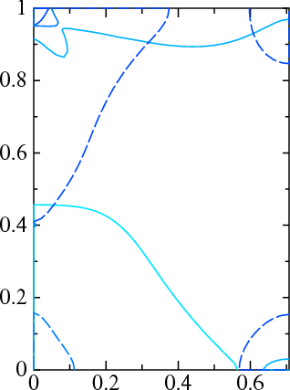

1. If ~/lm is your top-level directory do one of the following to generate the bands file
For ASA, do:
~/lm/testing/test.lm --quiet fe lm -vnit=1 -vnk=6 --iactiv=no -vmetal=2 fe --quit=band cp ~/lm/fp/test/fs.fe . lm -vmetal=2 fe --iactiv=no --band~con~fn=fsThe script (first command) sets up the potential; the second ensures that the correct Fermi level is put on the disk. The third copies file fs.fe: into the working directory:
# vx range n vy range n height band .5 .5 0 0 1 35 0 0 1 0 1 51 0.00 2:6See here for syntax. Fe is magnetic and bands 2,3,4,5,6 cross the Fermi surface (either majority or minority), so bands 2..6 will be generated. This file is set up to generate mesh of points for bands 2..6 in the rectangle defined by Γ=(0,0,0) in the lower left corner, H=(0,0,1)2π/a at the upper left corner, N=(1/2,1/2,0)2π/a at the lower right corner, and N=(1/2,1/2,1)2π/a at the upper right corner.
The FP test suite generates the bands file automatically as part of the test. Do:
~/lm/fp/test/test.fp --quiet fe 1
To plot the FS you will need graphics software. The remaining steps assume you have the the FPLOT package installed.
6. Split file bnds.fe into 10 separate files.
Name the first five files 2d, 3d, 4d, 5d, 6d,
and the last five 2u, 3u, 4u, 5u, 6u.
If you have the mcx calculator in your path you can do this with the following command. For example:
set rf = "-r:open bnds.fe" (tcsh) rf="-r:open bnds.fe" (bash) mcx $rf -w 2d $rf -w 3d $rf -w 4d $rf -w 5d $rf -w 6d $rf -w 2u $rf -w 3u $rf -w 4u $rf -w 5u $rf -w 6u
7. Create the following in file plot.fs
fplot -frme 0,1/sqrt(2),0,1 -x 0,1/sqrt(2) -y 0,1 -tmx .1
% var ef=-0.006678 # (or whatever the fermi level is output from your band calculation)
-lt 1,col=0,.1,1 -con {ef} 2u
-lt 1,col=0,.3,1 -con {ef} 3u
-lt 1,col=0,.5,1 -con {ef} 4u
-lt 1,col=0,.7,1 -con {ef} 5u
-lt 1,col=0,.9,1 -con {ef} 6u
-lt 2,col=0,.1,1 -con {ef} 2d
-lt 2,col=0,.3,1 -con {ef} 3d
-lt 2,col=0,.5,1 -con {ef} 4d
-lt 2,col=0,.7,1 -con {ef} 5d
-lt 2,col=0,.9,1 -con {ef} 6d
The postscript file should look like the picture shown below. Compare, e.g. to this paper
by Coleman et al: Phys. Rev. B23, 2491 (1981)
